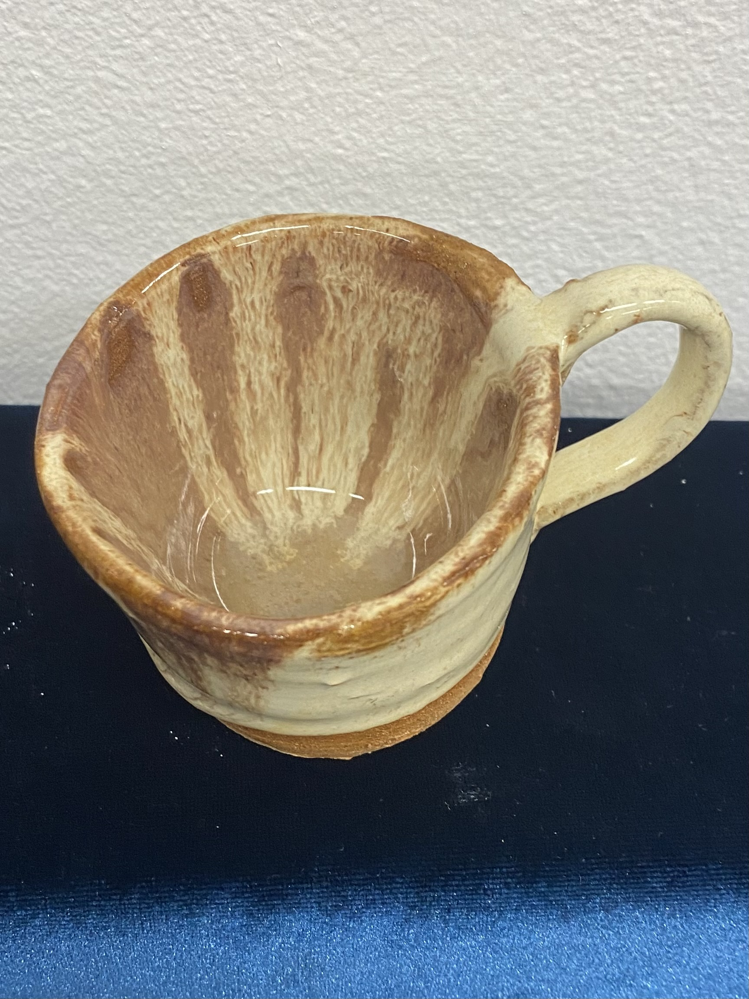
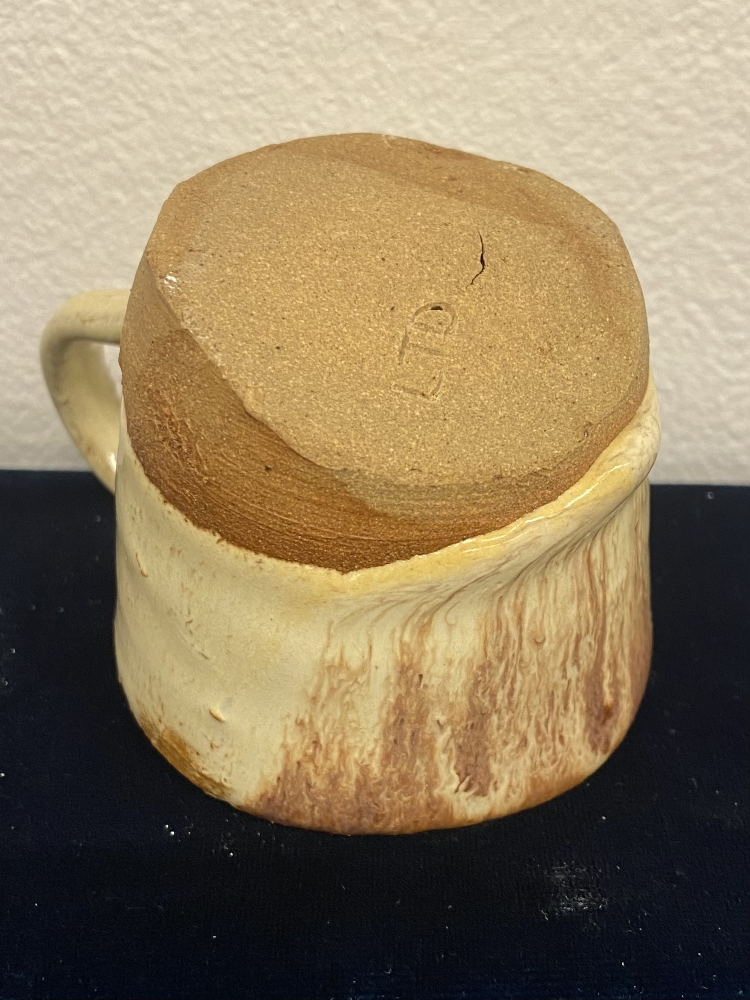
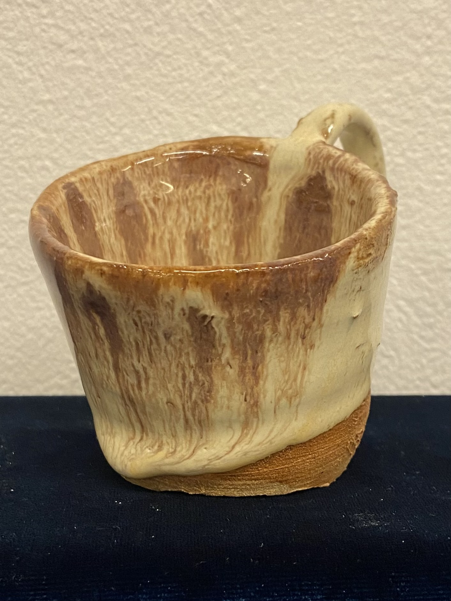

Mairangi Bay Clay Tilt Mug
The wire didnt cut flat across the bottom of this one so I have ended up with a fun and eclectic looking tilted mug!
2/4


3/4

4/4

❮
❯
Materials
- Mairangi Bay Clay (harvested and processed by me)
- Hokey Pokey and Malt Glaze[1] from ELAM.
- ELAM Ceramic Workshop (manual pottery wheel) and ELAM's amazing clay technician sorting out everything kiln related for me.
Process
Harvest
Needed to go out and collect the clay from Mairangi Bay (near Murry's).

The clay was all dry and brittle. But thanks to this drying in the sun, it was relatively easy to break off, into nice little chunks.
I take the parts with the least plant life still inside and break the clay down as much as I can so it will fit into my containers.

When breaking up my clay from Mairangi bay I thoroughly bashed it with a mallet inside of a fabric bag, this was reasonably effective
*although can be made more efficient by running it through a sieve to work out what peices still need more whacking.

Once clay is as powdery as desired I combined it with water, I left it for several days before trying to dry it out on the plaster board. It's important to make test pieces with any found clay to test how they fire and afterwards how they glaze.

Get the air out
Pockets of air are going to make throwing harder and create possible eruptions of air or cracks once the work has dried and gone in the kiln.
To avoid this we want to Throw the clay on the table a few times. Since the clay was possibly too malleable and sticky i did this on the plaster board to help toughen it up a bit before throwing.
Once you have let out some anger by throwing the clay into the table repeatedly we can begin to wedge the clay.
The goal of ramshead wedging is to even more throroughly get the air out of the clay by repeatedly pushing it into itself. Unfortunately i still fold my clay a little and its not as narrow as id liek which would be more effective at removing air bubbles, but I'm relatively new to clay so it's good enough for now.
Preparation

since this is a mug I will prepare some mug sized lumps and roll out the extra clay for the approbriate number of handles.
Throwing
Turn wheel counter clockwise if right-handed and clockwise if left-handed.
Centre the clay on the wheel
Centre clay as much as possible with dry hands. Use water and press down as needed (sometimes I need to smooth out the clay touching the wheel to achive a good stick) to make sure its properly connected the turntable.
If it’s not feeling even I will bring up the clay by pulling it inwards and upwards and squish it back down a few times and repeat until it feels more even.
Grip over clay with hand steady to even it out.
Use palm/foot of hand to even up the sides and find the middle of the clay
Once clay is centred I find the middle by putting a finger ontop and make a little groove to catch water.
Making a hole
adding more water into the groove I press down into centre to create a hole (leaving room for the bottom) I brace my thumb going down with my outside hand to ensure it isn’t moving.
Bring up the sides
Bring up the walls (resting inner hand ontop of outer hand for stability to achieve an even distribution of clay). If the top of the vessel is lopsided (this will be because our hole wasnt perfectly centre or hands wernt steady when brinign up the walls, but that is okay!) we can use the wire to even up the top by cutting off the exccess while its turning.
We can leave it like this or use a tool (kidney bean) to evenly curve the sides.
Final touches!
Smooth with sponge and soak up excess water.
Leave to dry for a bit.
To attach handle, make scratches on the mug where the handle is going and on the handle, add some slop (watered down clay) and gently press into place, smoothe down excess clay into the mug.
If the handle hasn’t been left to dry in the right position for long enough or is too droopy I find it handy to dry the mug upside down so gravity is working with the desired direction of the handle.
Use wire to remove the vessel from the wheel.
I alternate between putting the handle on at this stage and leaving it to dry for a bit before using wire to seperate mug from the wheel
Or using the wire to seperate the vessel from the wheel before attaching the handle on a drying board.
Drying and Bisque Firing
Subject to how thick the clay is it will take a decent amount of time to dry, but this drying is crucial so it fires well in the kiln. When the clay is dry it will feel alot harder/brittle and it will have shrunk a little bit (since the water has evaporated). You should also notice a change in colour.
Glazing and Glaze Firing
I used Abbots Malt[1] before using a glaze you need to make sure its adequately mixed to avoid lumps. To coat the inside I poured glaze so it filled up the vessel and poured it out after a few seconds. To coat the outside I held my mug from the bottom and submerged it in the glaze for a few seconds before bringing it out, letting it drip and setting down to dry which happens really quickly compared to the clay. At tis stage it can go in the queue for a glaze firing!
Notes
[1] ELAM use Abbots Glazes supplied by CCG, I used Hokey Pokey and Malt on this mug. Also see: Mid-fire glaze handbook page 25 (Hokey Pokey) and page 27 (Malt)